12 Cyanobacterial mat Response to Sea Level Rise
Following the mangrove response to sea level rise predictions as described in Chapter 11, we carried out additional only hydrodynamic simulations with various discrete time steps representing the 50 and 100-Year for different sea level rise scenarios. In these simulations, the bed level changes and mangrove distributions were fixed to the predicted values at the corresponding time steps. The hydrodynamic outputs were then used to predict the potential distribution of persistent algal mats under future sea level rise scenarios.
12.1 Projected Impact of Sea-Level Rise on Algal Mat Redistribution
To evaluate the long-term response of algal mats under climate change, numerical simulations were carried out across three IPCC Shared Socioeconomic Pathways: SSP119 (low emissions / low SLR), SSP370 (medium-to-high emissions / moderate SLR), and SSP585 (high emissions / extreme SLR). Figure 12.1 - Figure 12.3 shows the predicted algal mat response to different SLR scenarios using the threshold based approach. Similary, Figure 12.4 - Figure 12.6 shows the predicted algal mat response to different SLR scenarios using Random Forest (RF) approach.
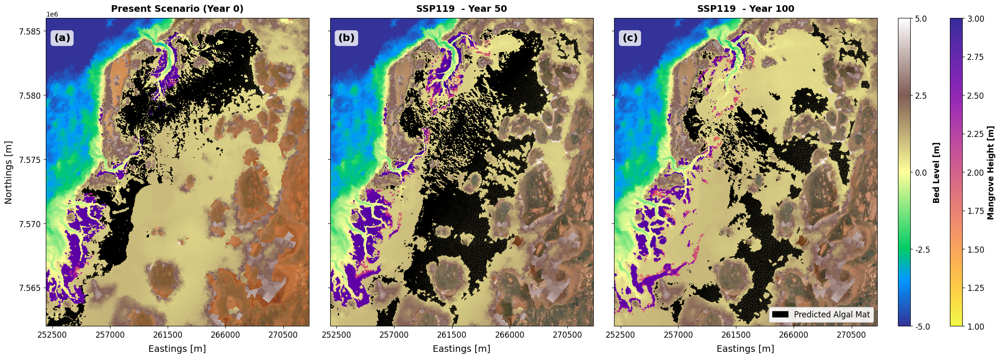
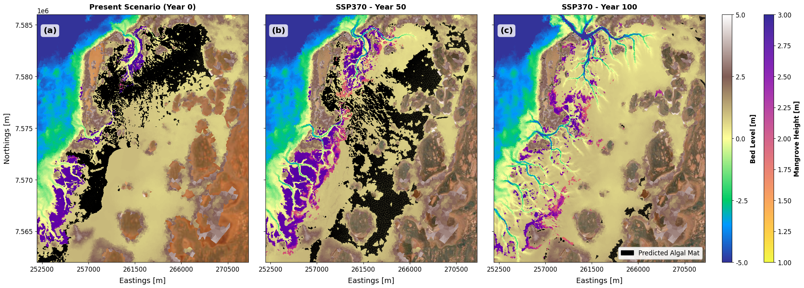
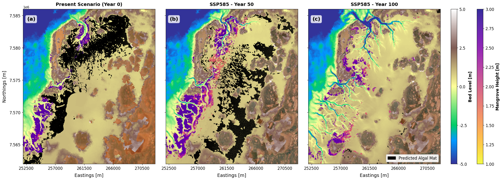
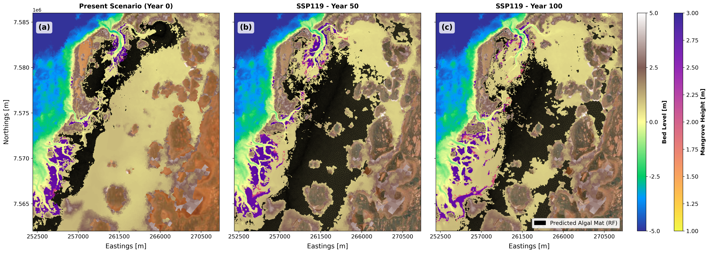
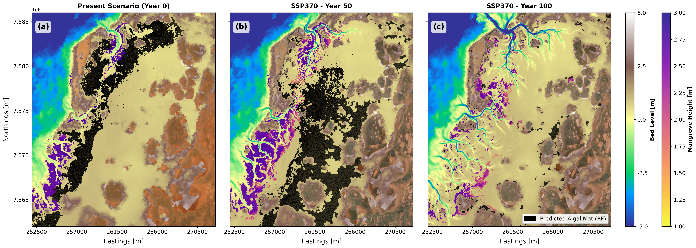
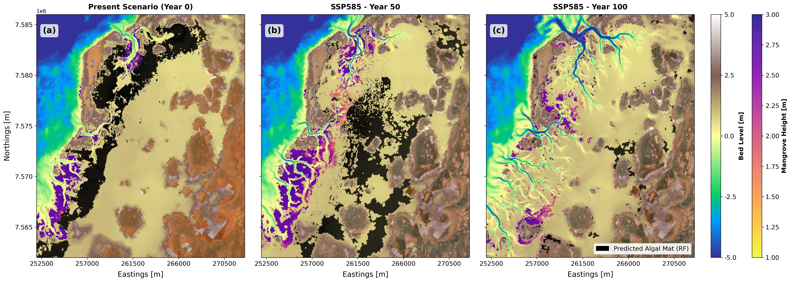
The threshold based and RF approaches produced broadly similar trajectories of habitat change, including the progressive fragmentation and landward redistribution of algal mats under increasing SLR. Mangrove distributions were identical between the two approaches because mangrove suitability was determined using the same underlying hydrodynamic and elevation criteria. Differences between the approaches therefore reflect their respective representations of algal mat suitability. Both approaches predicted a significant loss of algal mat area for SSP370 and the worst SLR scenario tested (SSP585) by Year 100. SSP119 showed clear habitat migration as expected with mild SLR; the hydrodynamic suitability zones tend to shift, which is clearly reflected in this scenario. Furthermore, to illustrate the distributional changes of algal mats and mangroves across the three SLR scenarios, we present a comparative analysis of the predicted spatial extent at Year 0, Year 50, and Year 100 for each scenario. The following sections provide a detailed description of the predicted trends and ecological implications associated with each SLR pathway.
12.2 Overview of Spatial and Cross-Shore Patterns
Spatial distribution maps and cross-shore transects were used to assess projected changes in mangrove and persistent algal mat distributions under three SLR scenarios (SSP119, SSP370 and SSP585). Spatial maps Figure 12.7 - Figure 12.12 (Panel a) show the predicted distributions at Year 100, with algal mats and mangroves overlaid on bed elevation. A representative seaward-to-landward transect is indicated by a light green line. Alongshore-averaged cross-shore profiles Figure 12.7 - Figure 12.12 (Panels b–d) summarise habitat coverage at Present (Year 0), Year 50 and Year 100, respectively. These profiles express the fraction of locations occupied by each habitat along the cross-shore distance, thereby integrating spatial variability across the modelled coastline. Furthermore, to isolate the differences in the approaches, we extracted the persistent algal distribution from both approaches across different SLR scenarios and compared in Figure 12.13.
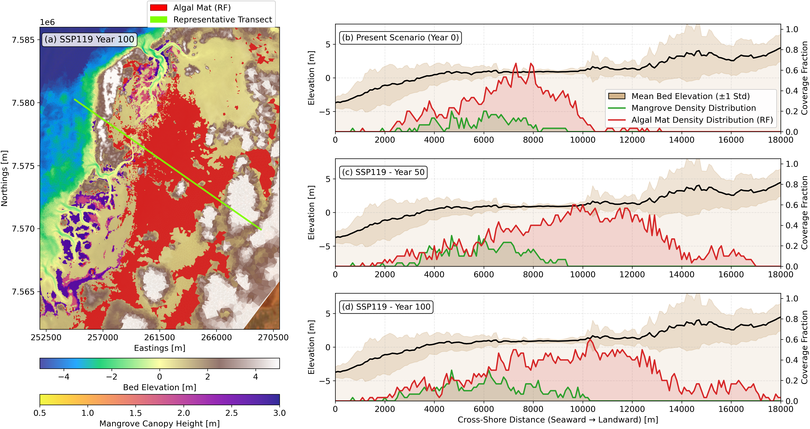
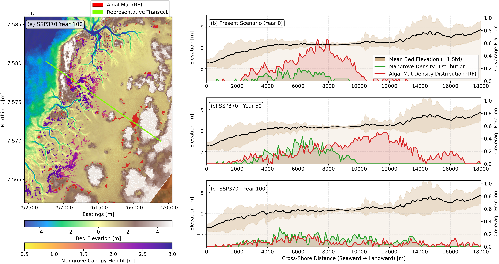
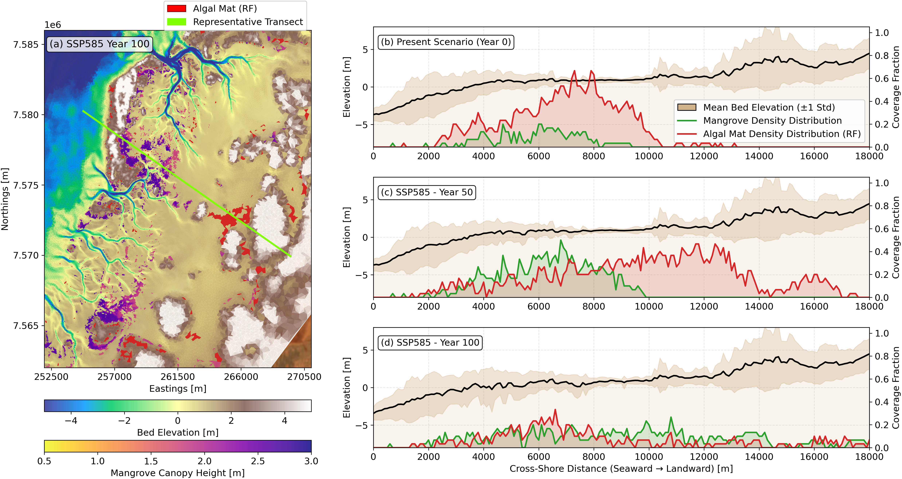
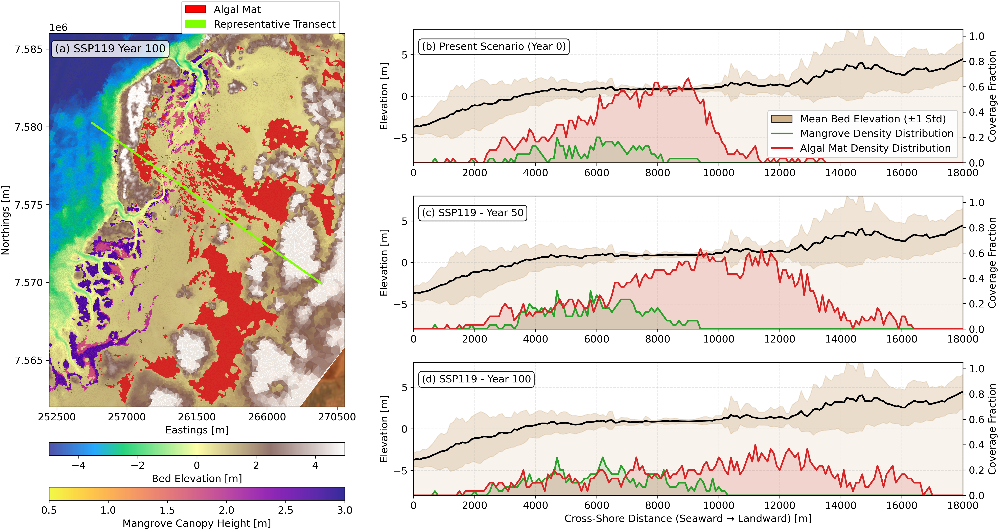
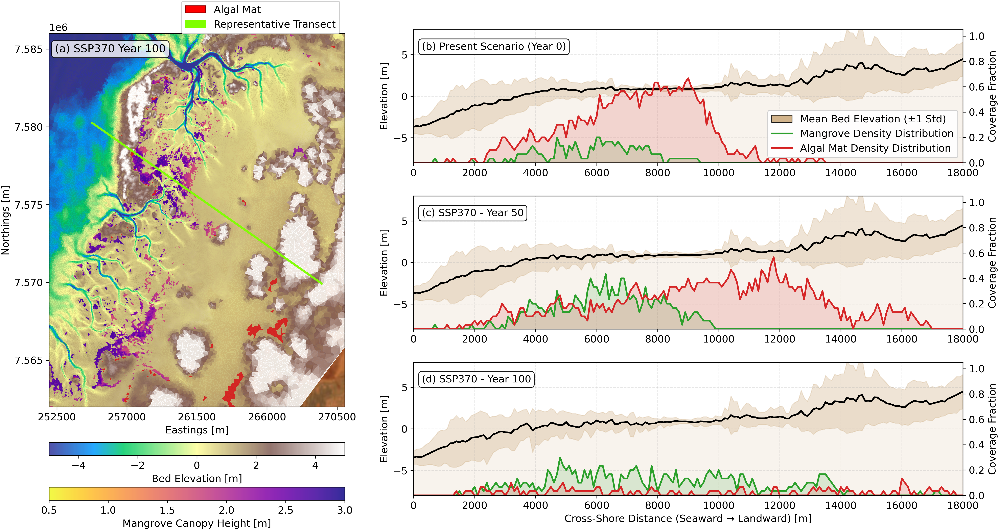
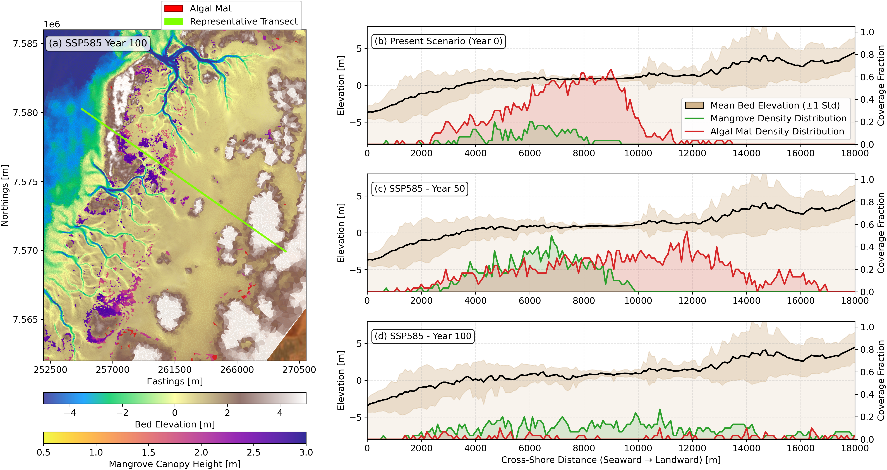
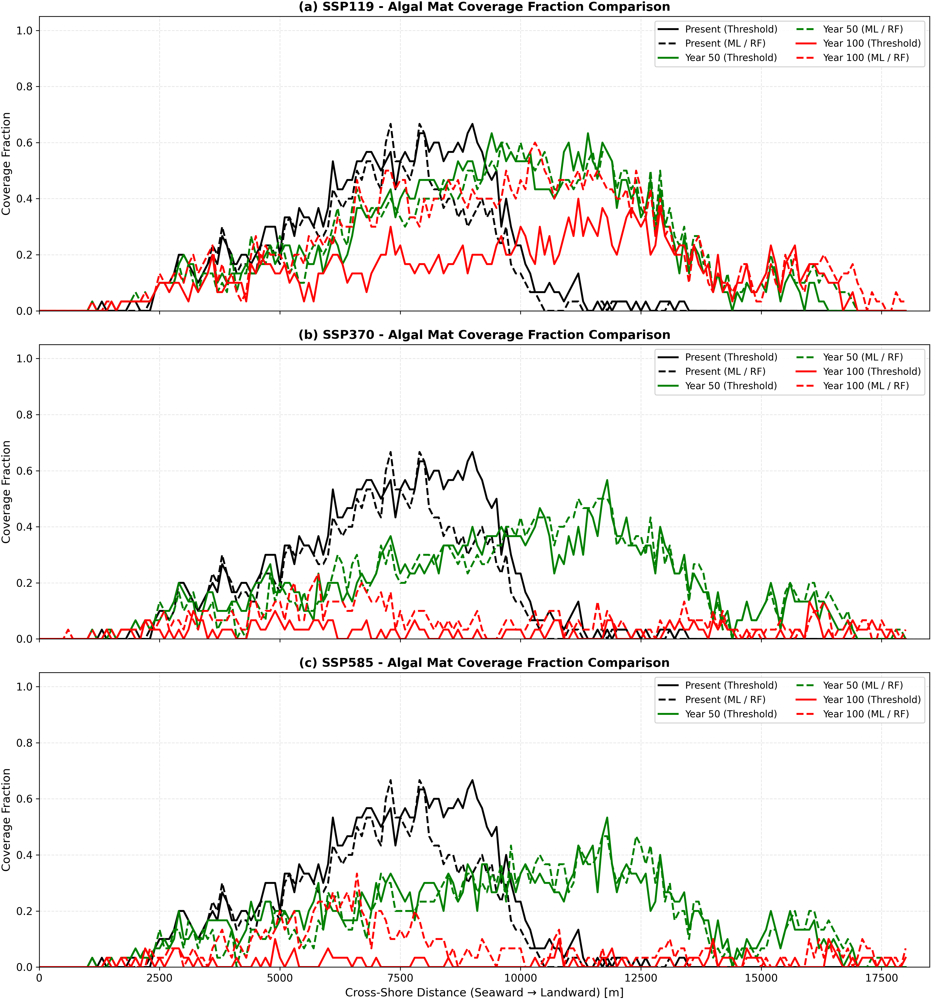
12.2.1 Threshold-Based versus Random Forest Approaches
12.2.1.1 Baseline Habitat Distribution
At Present (Year 0; black curves in Figure 12.13), the threshold-based approach (solid line) predicted a relatively broad, continuous distribution of algal mats between approximately 6,000 and 11,000 m along the cross-shore profile, with peak coverage fractions exceeding 0.60–0.70. In comparison, the Random Forest (RF) approach (dashed line) predicted a slighly narrower distribution, concentrated between approximately 5,000 and 9,500 m, with peak coverage of approximately 0.60–0.65.
These differences reflect a slighly different representations of habitat suitability in the two approaches. The threshold-based model classifies locations according to predefined environmental criteria, whereas the RF model estimates habitat occurrence from relationships among environmental predictors and observed distributions. The differences in predicted extent and peak coverage indicate that the representation of algal mat suitability influences the estimated baseline distribution, particularly near habitat boundaries.
12.2.1.2 Responses to Increasing Sea-Level Rise
Differences between the approaches become more apparent in their projections for Year 50 (green curves) and Year 100 (red curves; Figure 12.13). The threshold-based model (solid lines) generally produces sharper transitions in algal mat coverage, reflecting the discrete classification of locations according to predefined suitability criteria. As environmental conditions move beyond these criteria, locations become unsuitable, resulting in abrupt reductions in predicted coverage.
In contrast, the RF model (dashed lines) produces more gradual spatial transitions and retains low predicted coverage in some landward areas beyond 12,000 m under moderate-to-high SLR (Panels b and c in Figure 12.13). This broader distribution of residual habitat reflects differences in how the two approaches represent environmental suitability. However, the persistence of predicted algal mat occurrence does not necessarily indicate the presence of viable ecological refugia, which would require further validation against environmental conditions and observed habitat distributions.
Despite these differences, both approaches project a progressive decline in algal mat coverage as SLR intensifies. Their agreement in the overall direction of change indicates that the predicted loss of algal mat habitat is consistent across modelling approaches, although the spatial extent and continuity of the remaining habitat differ.
12.2.2 Scenario-Specific Projections
12.2.2.1 SSP119
Present (Year 0). Both approaches predict distinct habitat zonation (black curves in Panel a of Figure 12.13), with mangroves occupying the lower intertidal zone (3,000–8,000 m) and algal mats distributed farther landward across supratidal flats at elevations of approximately 0.5–1.8 m.
Year 50. Algal mat distributions remain relatively stable, although some fragmentation occurs near the seaward margin (6,000–8,000 m). Coverage remains approximately 0.40–0.60 across the central and landward flats (10,000–14,000 m; green curves in Panel a).
Year 100. Both approaches predict persistent algal mat coverage of approximately 0.20–0.40 between 10,000 and 16,000 m, while mangrove distributions remain comparatively stable along tidal channels and their margins (red curves in Panel a).
12.2.2.2 SSP370
Year 50. Algal mats become increasingly fragmented near tidal channels and lower-lying areas, with peak coverage declining from baseline values above 0.60 to approximately 0.30–0.50. The main coverage band shifts landward towards 10,000–14,000 m (green curves in Panel b). Mangrove coverage increases locally along creek margins.
Year 100. Algal mat coverage declines substantially in both models (red curves in Panel b). The threshold-based approach predicts small, fragmented patches predominantly beyond 12,000 m, with coverage below 0.10. In contrast, the RF approach retains a more continuous, low-coverage distribution between approximately 6,000 and 16,000 m, with fractions of 0.10–0.15.
Mangroves extend across a broader cross-shore range (2,000–12,000 m), but coverage generally remains below 0.15–0.20, indicating a dispersed distribution rather than extensive, continuous forest cover.
12.2.2.3 SSP585
Year 50. Both approaches predict substantial reductions in algal mat coverage across the intertidal and supratidal flats, with peak coverage falling below 0.50 and the main distribution shifting towards 10,000–14,000 m (green curves in Panel c). Mangrove coverage temporarily increases between approximately 5,000 and 9,000 m, reaching around 0.40. This pattern suggests a potential expansion of suitable inundation conditions, although increased modelled coverage does not establish successful mangrove colonisation.
Year 100. Persistent algal mat habitat approaches complete loss across the profile (red curves in Panel c). The threshold-based model predicts coverage below 0.05 across almost the entire transect, whereas the RF model retains small residual peaks of approximately 0.10–0.15 between 11,000 and 17,000 m.
Mangroves extend across approximately 2,000–15,000 m but remain below 0.15 coverage across most of the profile, indicating a dispersed distribution rather than extensive forest development.
12.2.3 Synthesis Across Sea-Level Rise Scenarios
The projected changes in habitat distribution become progressively more pronounced from SSP119 to SSP585. Under SSP119, substantial algal mat coverage persists across the higher flats, whereas SSP370 produces greater fragmentation and contraction. Under SSP585, both approaches predict near-complete loss of persistent algal mat habitat by Year 100. Mangroves exhibit temporary increases in coverage in some areas but remain relatively sparse under the more severe scenarios.
The two modelling approaches agree on the overall direction of change but differ in the predicted extent of residual algal mat habitat. The threshold-based model generally produces more restricted distributions with sharper spatial boundaries, while the RF model retains low coverage across a broader range of locations. These differences are most evident under SSP370 and SSP585, highlighting uncertainty in the spatial distribution of remaining habitat under increasing SLR. Overall, the results indicate substantial scenario-dependent restructuring of coastal wetland habitats, with the greatest losses of persistent algal mats under high SLR scenarios.
12.3 Impact of Development Bund Walls on Habitat Redistribution
To evaluate the cumulative effects of coastal development and climate change, additional simulations incorporated the Ashburton Salt Project bund walls (modelled as thin dam walls within Delft3D FM). These structural barriers significantly modify local hydrodynamics, tidal propagation, and inundation patterns compared to the non development scenarios driven solely by sea level rise (SLR) (Figure 12.1 through Figure 12.12 versus their development counterparts). Panel (a) in all development figures displays the predicted Year 100 spatial distributions, while panels (b) through (d) illustrate the scenario-wise cross-shore profiles for Present (Year 0), Year 50, and Year 100, respectively.
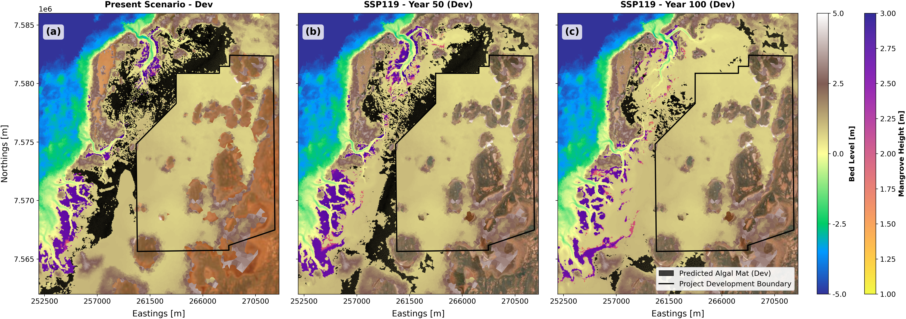
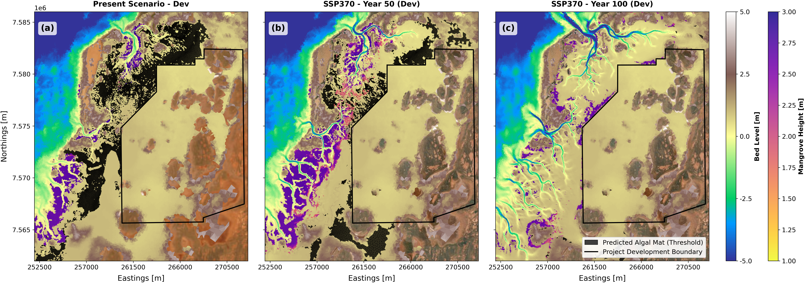
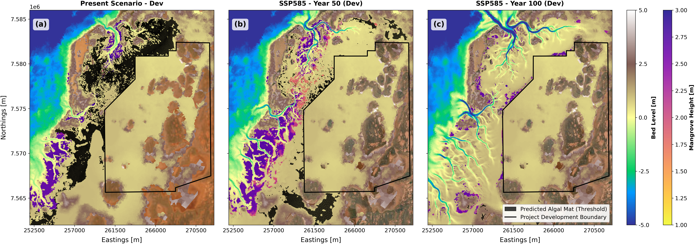
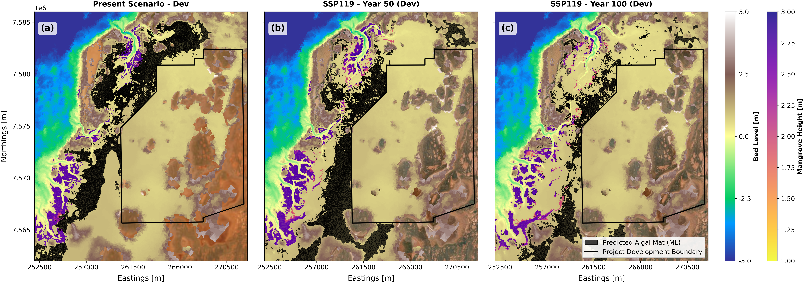
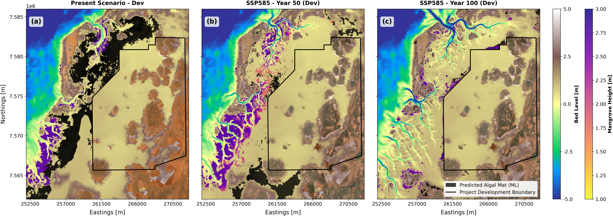
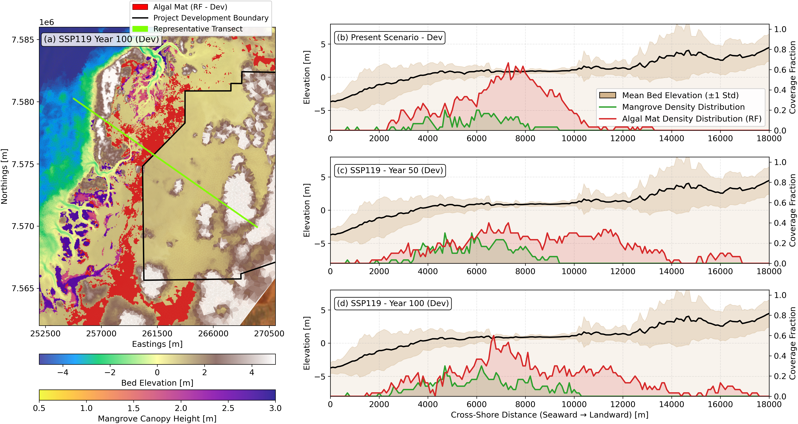
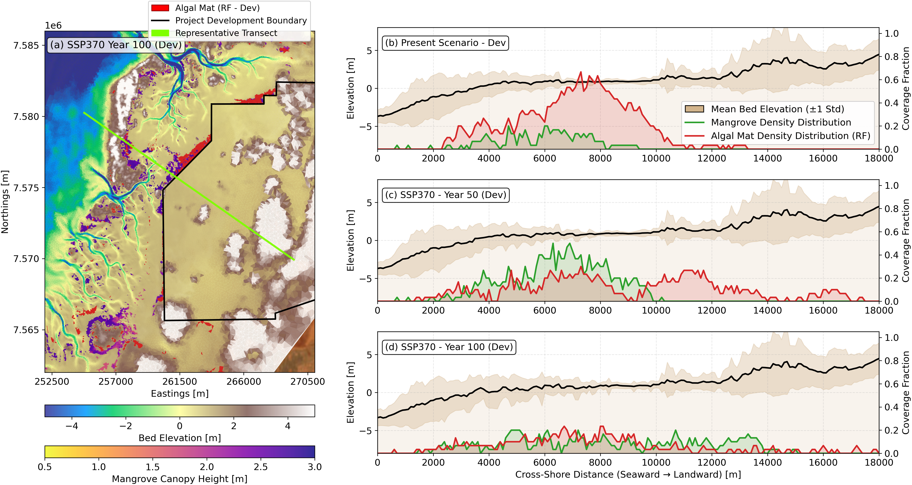
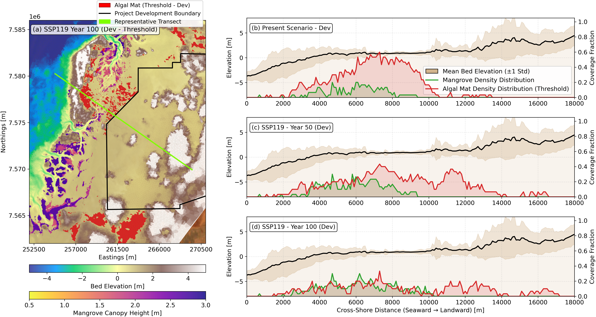
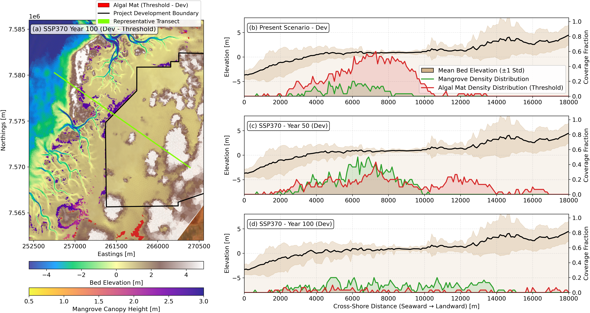
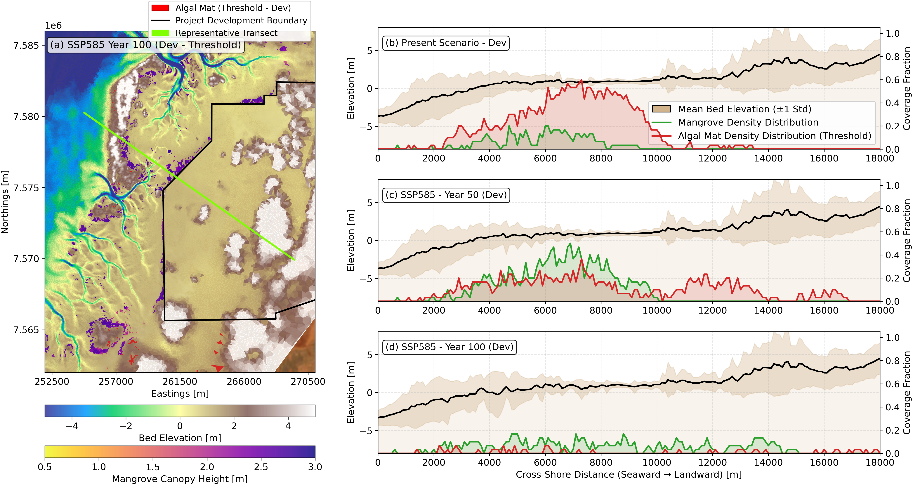
12.3.1 Algal Mat Responses Under Development Scenarios
The inclusion of developmental bund walls imposes a profound constraint on algal mat distribution, primarily by blocking tidal flows and altering inundation frequencies within the project footprint (spanning approximately 10,000 to 16,000 m along the cross-shore profile).
SSP119 Without bund walls, SSP119 maintains a robust and widespread band of algal mats across the higher supratidal flats. However, with the bund walls in place, algal mat coverage within the impoundment zone experiences a substantial reduction, losing an estimated 30% to 50% of its prospective high elevation habitat area as direct tidal connectivity is restricted.
SSP370 The combined pressure of moderate SLR and hydrodynamic blockage leads to severe fragmentation. Algal mat coverage is largely restricted to narrow exterior fringes outside the bund walls, accelerating habitat loss compared to the unconstrained baseline.
SSP585 Under extreme SLR, both the non development and development simulations show severe declines, resulting in a near complete collapse of persistent algal mats by Year 100. Consequently, SSP585 exhibits the most similar trajectory between with and without bund wall conditions, as extreme sea level rise and inundation overwhelm both natural and modified hydrodynamic niches.
12.3.2 Influence of Bund Walls on Mangrove Distributions
Mangrove distributions exhibit distinct shifts due to the modified hydrodynamic regime imposed by the bund walls. Because mangroves rely heavily on tidal channel networks and intertidal inundation (typically occupying the lower to mid intertidal zone between 2,000 and 9,000 m), the physical obstruction of flow paths by the bund walls restricts their inland expansion potential. While unconstrained scenarios show temporary landward migration of mangroves under rising sea levels, the bund walls impede lateral tidal propagation, forcing mangroves to concentrate more densely along unblocked seaward channels and creek margins. This results in a more constrained and compartmentalised mangrove distribution with lower overall cross-shore dispersion compared to the unconstrained SLR projections.
For comparative purposes, Figure 12.26 and Figure 12.27 illustrate the direct scenario-wise cross shore profile comparisons between unconstrained (without development, solid lines) and bund wall constrained (with development, dashed lines) model runs across Present, Year 50, and Year 100 timeframes.
12.3.3 Figure Inclusions
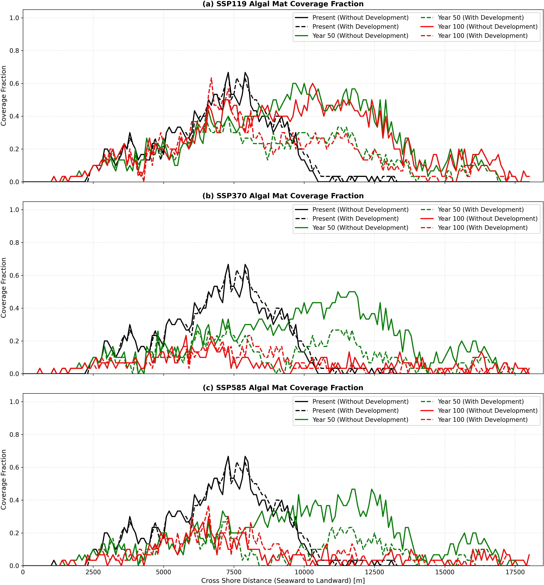
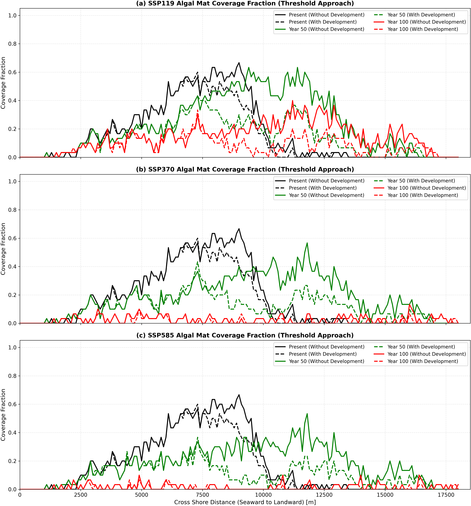
The comparative profiles reveal that the magnitude of deviation caused by the developmental bund walls varies distinctly across SLR scenarios as well as different modelling approaches:
SSP119: The most prominent divergence occurs across the central plateau (7,000 to 11,000 m). Without development, unconstrained hydrodynamic conditions allow robust algal mat coverage fractions to reach 0.50 to 0.65. With development, the restricted tidal exchange within the impoundment zone suppresses coverage fractions, creating a noticeable gap between solid and dashed curves during Year 50 and Year 100.
SSP370: Moderate SLR combined with structural blockage induces pronounced vertical and spatial compression. The threshold based approach exhibits sharper drop offs in suitability boundaries, whereas the RF model displays more gradual tapering, yet both models highlight a marked reduction in peak coverage within the mid profile region.
SSP585: Under extreme SLR, the difference between development and non development profiles narrows significantly. Because extreme sea level rise inundates and overwhelms the low lying coastal margins regardless of local bund structures, both modelling approaches project near identical, severely depressed coverage trajectories by Year 100.